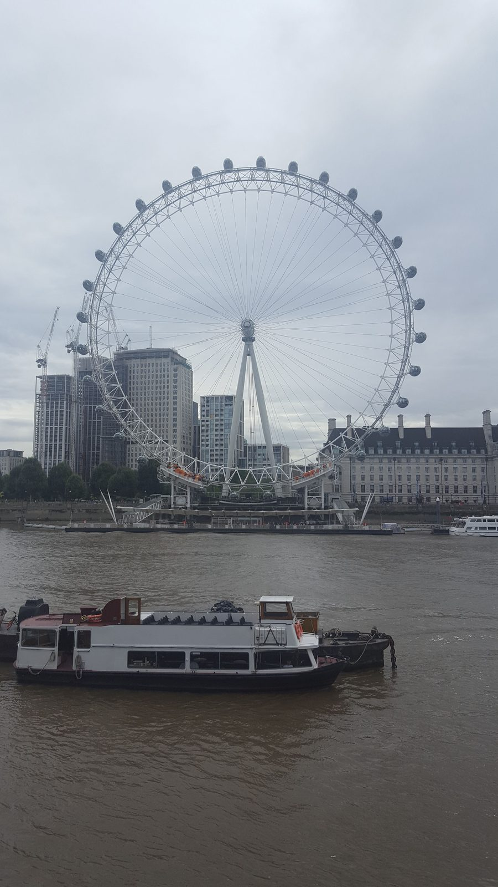
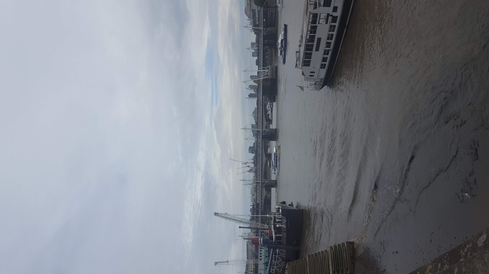
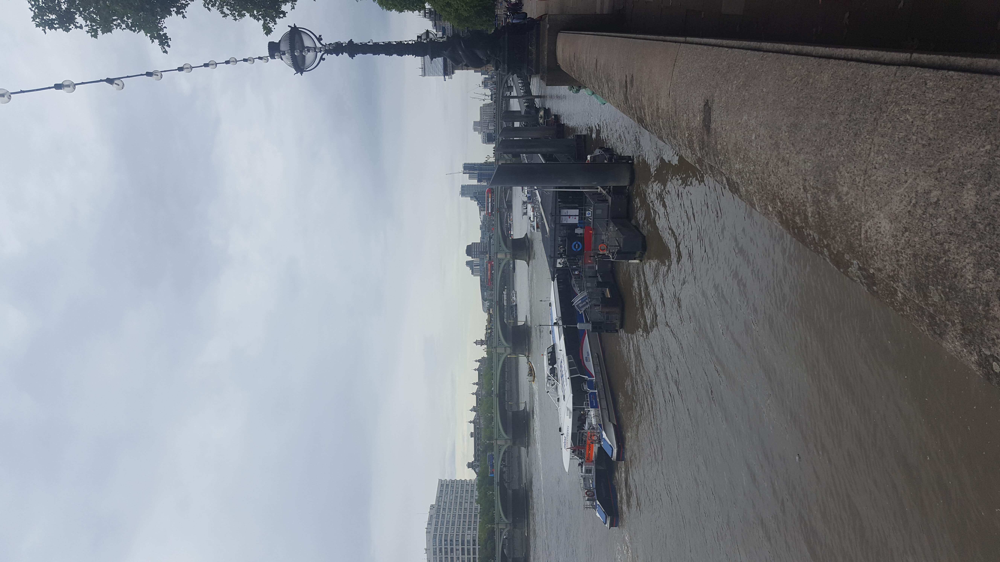
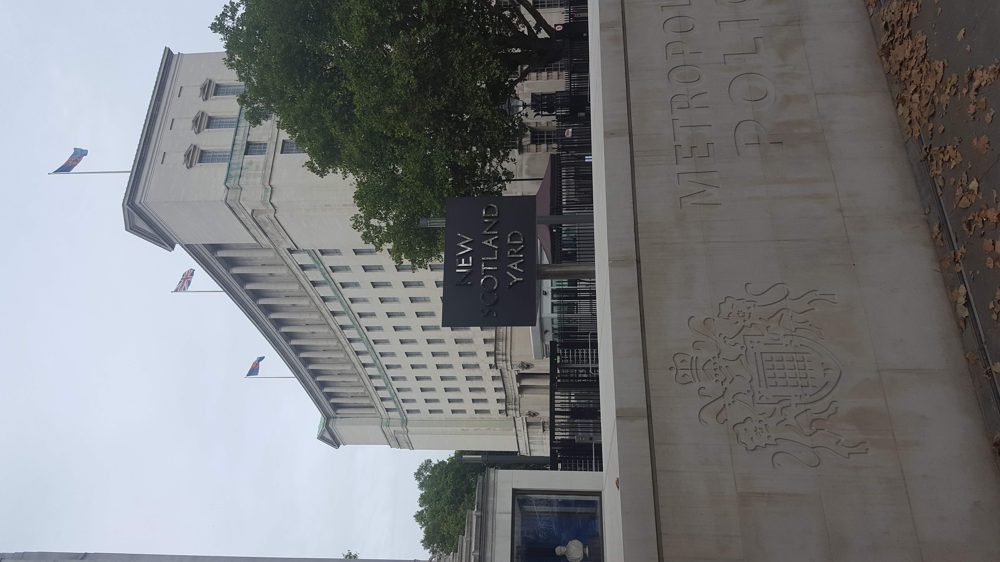
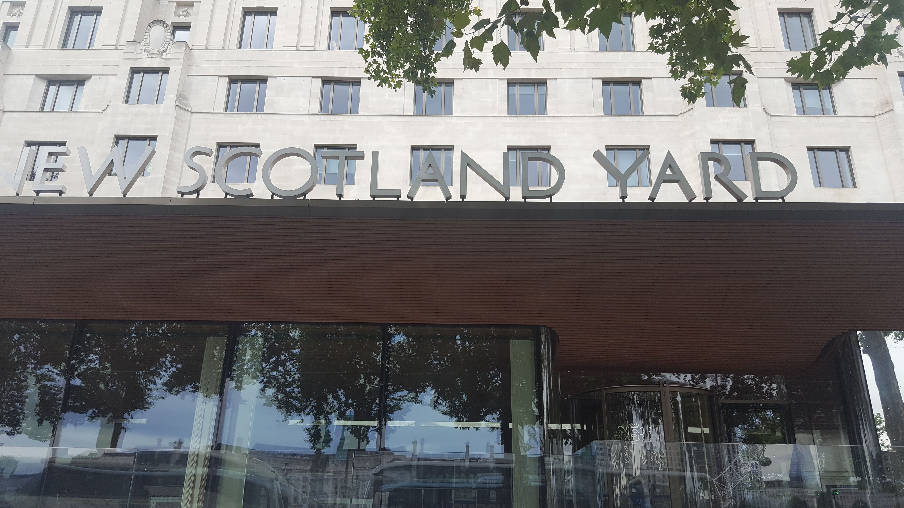
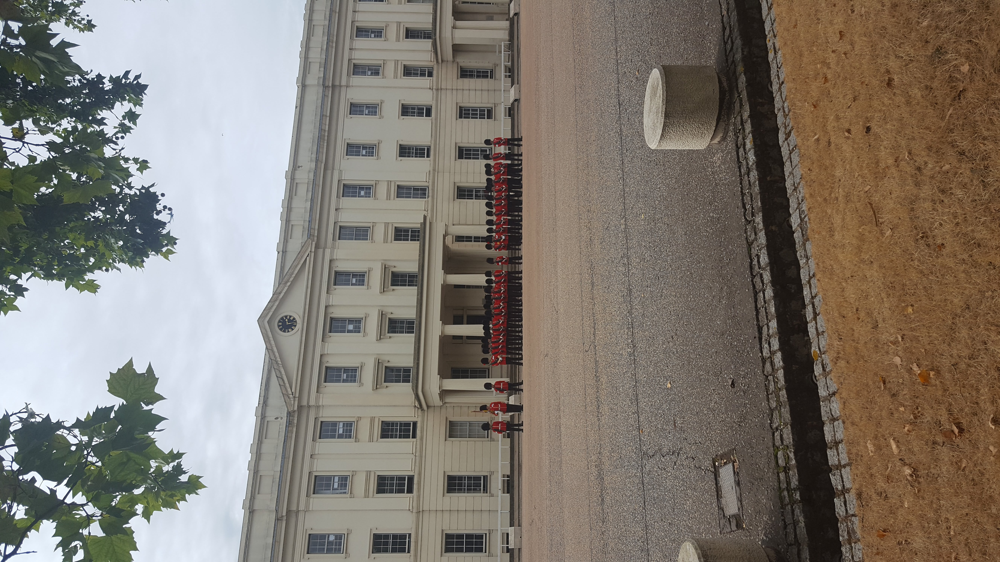
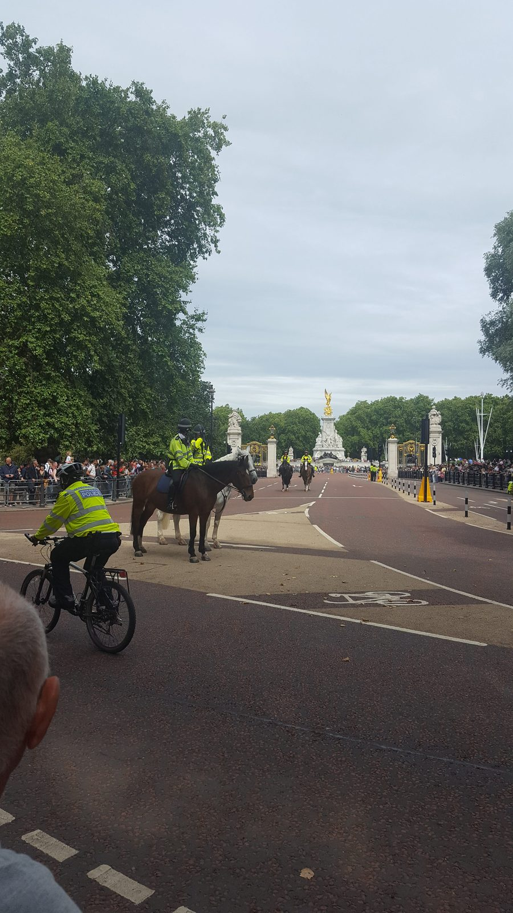
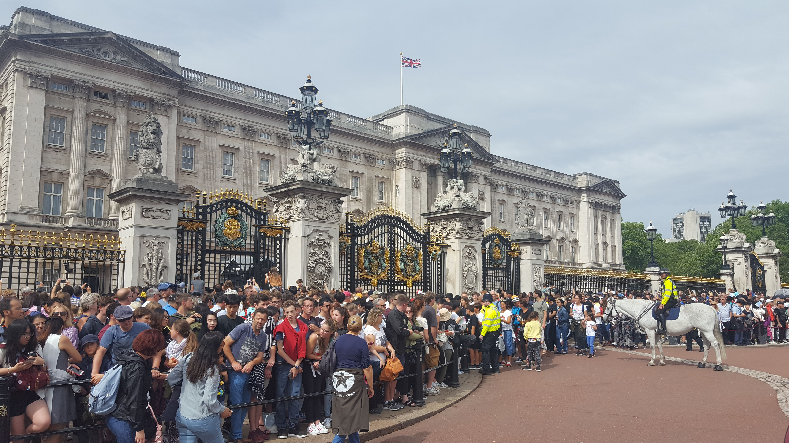

Klasiky — Westminster, Tower, Tower Bridge — i méně okoukané kouty. (15 fotek · srpen 2018)

London Eye a lodě na Temži (srpen 2018)

Londýn (srpen 2018)

Londýn (srpen 2018)

Sídlo policie New Scotland Yard v Londýně (srpen 2018)
Dalších 11 fotografií (celkem 15)Sbalit další fotografie

Nápis New Scotland Yard nad vchodem budovy v Londýně (srpen 2018)

Londýn (srpen 2018)

Londýn (srpen 2018)

Davy turistů před Buckinghamským palácem v Londýně (srpen 2018)Londýn (srpen 2018)Západní průčelí Westminsterského opatství v Londýně (srpen 2018)Victoria Tower Westminsterského paláce v Londýně (srpen 2018)Turistický autobus Big Bus u zastávky v oblasti Westminsteru v Londýně (srpen 2018)Londýn (srpen 2018)Londýn (srpen 2018)Kolo London Eye při pohledu přes Temži (srpen 2018)
Pro koho je tato stránka: kdo má rád Británii bez stereotypů. Tři odlišné světy, ve kterých jsem byl pracovně i osobně — divoké Skotsko, světový Londýn a průmyslový střed.
Co tady nenajdeš: turistický itinerář (Buckingham, London Eye…). Místo toho jsou tu vlastní snímky a pár vět ke každému místu.
Tři odlišné světy
Skotsko je krajina, která se ti dostane pod kůži —
Highlands, Loch Ness, hrady na skalnatých výběžcích. Počasí
se mění každých dvacet minut, ale o to víc si vážíš každého
průhledu mezi mraky.
Londýn není potřeba představovat. Westminster,
Tower, Tower Bridge, Temže — všechno v jednom dlouhém dni
pěšky. Britská železnice tě tam dostane snadno, jen mind the gap.
Birmingham a střední Anglie — industriální dědictví,
kanály (víc než v Benátkách, prý), méně turistů, autentičtější.
„Skotsko si nemusíš pamatovat, stačí si vzpomenout, co jsi cítil."
Tip na prohlídku Londýna
Reklama · Za rezervaci mohu získat provizi. Nabídku zobrazuje GetYourGuide.
.jpg)